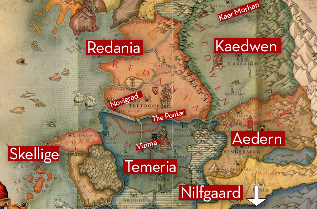

Universo de The Witcher
A história dos três jogos e dos livros se passa em um mundo fantasioso dividido entre os reinos do norte (Temeria, Redenia, Aedirn e Kaedwen) e o império de Nilfgaard ao sul que pertencem à um continente sem nome.
Não existe um mapa canônico do continente, o que temos são diversas versões adaptadas por fãs da franquia. O mapa dos jogos de The Witcher, por exemplo, foi criado em um trabalho conjunto entre a CD Project Red e a Arkadia (grupo de fans poloneses), além disso, eles contaram com vários conselhos do próprio criador dos livros, Andrzej Sapkowski.
Veja abaixo um dos muitos mapas que podemos encontrar na internet, que retrata os Reinos do Norte (onde se passa o TW3):

Nesse continente cheio de fantasia, aventuras e romances, vivem criaturas como anões, elfos, grifos, humanos, bruxos...
Os bruxos são humanos que sofreram alterações mutagênicas e que rodam o continente do jogo aceitando contratos oferecidos por humanos comuns, para eliminar monstros em troca de coroas. O personagem principal, Geralt de Rivia, é um desses bruxos.
(Um ponto importante que vale ser ressaltado, para que seja mais fácil imaginar o mundo, é que o jogo se passa durante o século XXIII, ou seja, em uma era medieval.)
Como já dito anteriormente, além de Geralt, nos são apresentados diversos outros personagens durante o jogo. Falamos sobre alguns deles na página “personagens” aqui do site.
Agora que já contextualizamos você sobre o mundo fantasioso do jogo, vamos falar especificamente sobre a história (contendo alguns spoilers). Começando com os livros:
Sobre os Livros
Foram lançados sete livros pelo autor Andrzej Sapkowski, entre os anos de 1992 e 1999, sendo eles: A Espada do Destino (1992); O Último Desejo (1993); O Sangue dos Elfos (1994); Tempo do Desprezo (1995); Batismo de Fogo (1996); A Torre da Andorinha (1997) e A Senhora do Lago (1999).
Os dois primeiros livros são coletâneas de contos, interligados de certa forma e que são muito importantes para o universo e para a compreensão da história. Esses dois livros são os que mais se assemelham com os jogos, pois neles Geralt faz seu trabalho de bruxo, aceitando contratos e matando monstros, por conta disso, há quem diga que em alguns momentos os dois primeiros livros têm uma narrativa “seca”, que quase só consiste em diálogos e descrições de combates. Por serem "contos", a escrita do autor não é bem típica das fantasias mais conhecidas, como Gelo e Fogo (que é incrível, diga-se de passagem).
Do terceiro livro em diante, as obras são romances, não mais contos. A escrita é bem irônica, com humor. Não há tanta ação como nos jogos, nem tantas batalhas e descrições de combates como no primeiro livro e não há um peso de fantasia épica. A trama fica um pouco mais política, com intrigas, conspirações e dividida em três arcos principais: do Geralt, da Yennefer e da Ciri.
Ficou curioso e quer comprar os livros? Acesse um anúncio na Amazon clicando aqui.
Agora, faremos breves resumos um pouco mais detalhados apenas dos dois primeiros livros, isso porque eles foram adaptados nas duas temporadas da série da Netflix e também porque não queremos dar spoilers de toda a história da saga. Ressaltamos que a experiência da leitura é completamente diferente da experiência do streaming, mas caso você tenha assistido a série, verá que há algumas semelhanças com os livros e, caso não tenha assistido, também recomendamos que assista.
-
Espada do Destino
Ao contrário do segundo livro (primeiro na ordem de leitura) temos aqui seis contos que são organizados em ordem cronológica, sendo eles: O limite do Possível; Um Fragmento de Gelo; O Fogo Eterno; Um Pequeno Sacrifício; A Espada do Destino e Algo Mais.
O primeiro conto relata a história da caçada pelo lendário dragão dourado, Villentretenmerth, que podia assumir a forma humana (representada por um nobre, Borch Três Gralhas, viajando acompanhado por duas guerreiras zerricanas, Tea e Vea). A história também desenvolve mais o relacionamento entre a feiticeira Yennefer e o bruxo Geralt, que começou nos contos anteriores. Nesse momento o autor já deixa evidente o principal tema da maioria dos contos: o destino
No segundo conto temos vários diálogos complicados e cheios de simbolismos. Geralt descobre que Yennefer manteve por um tempo, uma relação ioiô com ele e Istredd. Quando terminava com Geralt, ela ficava com Istredd, e vice-versa. Geralt e Yennefer se envolvem num diálogo complexo, e acabam se magoando. Geralt termina com Yennefer, que acaba acreditando ser "a rainha do inverno: incapaz de ser amada" e Geralt "um mutante sem sentimentos: incapaz de amar".
No terceiro conto temos novamente o código de honra de Geralt sendo colocado à prova (assim como no contrato para matar o dragão no outro livro). Nesse conto descobrimos que o código de Geralt não o permite matar monstros sencientes, quando ele aceita um contrato de um doppelganger que assumiu a forma de um comerciante e contraiu inúmeras dívidas. Nesse conto também temos Geralt conhecendo Dudu que, de maneira muito divertida, dá uma aula bem didática de como funciona a economia em uma metrópole da fantasia. Ou seja, nesse conto temos uma aprofundação das características do bruxão e uma visão do mundo das monarquias da saga.
O quarto conto é considerado um dos mais tristes do livro, por conta dos acontecimentos entre Jaskier e Essi Daven, uma mulher que eles encontram em um casamento. Durante o conto, Geralt aceita alguns contratos e diversas coisas acontecem, muitas mensagens subliminares estão presentes no desenrolar das histórias. No ponto alto, o final, Essi morre em uma epidemia e Jaskier a enterra com um de seus bens mais preciosos, seu alaúde, pois ele a tratava com um profundo respeito, o que não era um comportamento típico em relação a mulheres.
No quinto conto, sendo este o que dá nome ao livro, A Espada do Destino, pode ser considerado um dos mais importantes por estabelecer a relação entre Geralt e Ciri, mostrando que a ligação entre os dois transcende a ordem da predestinação e entra no campo afetivo. Resumindo, neste conto Geralt é contratado para entregar uma mensagem à rainha das Dríades, Eithné, porém no meio desta missão, Geralt se depara com uma Centopeia gigante que acaba atacando um ser humano. Geralt como um bom bruxo, se propõe a ajudar, e acaba salvando Ciri.
No último conto do livro, Geralt passa por um ferimento grave, que faz com que ele tenha delírios e veja sua mente oscilando entre o inconsciente e o consciente. Durante os delírios, Geralt acaba tendo conversas com Yen, sobre o seu destino em relação à Lei da Surpresa. Para Geralt deveria haver algo a mais para estabelecer uma conexão entre ele e Ciri, além do “destino”. Outros acontecimentos acontecem, como invasões e mortes, Geralt reencontra Ciri e a enxerga com outros olhos (relação paternal).
Páginas: 3841992 -
O Último Desejo
Temos sete contos nesse livro, sendo eles (em ordem cronológica): Os confins do Mundo; O último Desejo"; Uma questão de Preço; O mal Menor; Um grão de Veracidade; O Bruxo e A voz da Razão.
No primeiro conto Geralt e Jaskier (ou Dandelion, como é chamado nos jogos), passam por uma vila e aceitam um contrato para matar uma espécie de diabo. Conhecemos melhor o Jaskier nesse conto e nos deparamos com os Elfos, que são importantes para a saga.
No segundo, que leva o nome do livro, é muito importante pra saga. Ele narra uma história de quando Geralt e Jaskier encontraram um “gênio”. É aqui que o bruxão encontra o amor da vida dele, a feiticeira Yennefer de Vengerberg.
No terceiro Geralt é contratado para fazer um serviço especial em Cintra. A rainha Calanthe deseja que ele não deixe que nada de errado ocorra num jantar em que aparecerão pretendentes para a princesa Calanthe. Mas como se descobre ao longo da narrativa saga, nem tudo é realmente uma questão de preço, e a “Lei da Surpresa” sempre cobra suas dívidas.
No quarto conto a personalidade do bruxo é trabalhada de uma maneira muito interessante. Podemos compreender melhor como Geralt pensa, no que ele acredita, seu senso de justiça e suas convicções. Nos jogos os NPC’s chamam o bruxo de “Carniceiro de Blaviken”, nesse conto você descobre o motivo. Se delicie com o paradigma entre escolher o Mal Menor ou o Mal Maior.
No quinto conto Geralt e Plokta (Carpeado nos jogos) acabam indo parar em uma mansão em que o anfitrião, Nivellan, foi amaldiçoado e ficou com uma aparência horrenda. Resumindo, Sapkowski faz aqui uma releitura de A Bela e a Fera, mas numa versão bem mais sombria.
No sexto conto Geralt é contratado para combater um monstro chamado estrige. Mas ele acaba enfrentando um dilema, pois por ser um caçador de monstros, em geral os seus contratos são para matar esses seres, mas o seu contratante, o Rei Foltest, deseja que a estrige seja apenas desamaldiçoada. Nesse conto percebemos que alguns humanos, como Foltest, são piores do que os monstros.
Todos os seis primeiros são interligados ao último conto. Digamos que é como se os seis primeiros contos estivessem sendo contados por Geralt no presente para Nenneke, ela que está ali tratando das feridas que ele sofreu contra a estrige enfrentada em “O Bruxo”.
Páginas: 3201993
Para falarmos agora da história dos dois primeiros jogos, precisamos dar um spoiler do final dos livros, então, caso tenhamos despertado o interesse em você de ler os livros da saga, recomendamos que não leia abaixo, para que não descubra como tudo termina.
Sobre o Final dos Livros
Na última parte do último livro, muitas coisas são explicadas, como por exemplo, quem é Emhyr (imperador de Nilfgaard e pai de Ciri). Mas o que nos interessa é apenas o final:
No final do livro Geralt está conversando com seus amigos em uma Taverna em Rivia, manifestando o interesse em parar com essa vida de bruxo. Eles estavam tentando imaginar como seria a vida de Geralt e Yennefer em um lugar retirado, longe de toda a maldade dos monstros e dos seres humanos.
No meio desse diálogo, eles começam a escutar muito barulho e percebem então que está acontecendo uma rebelião. Acontece então o “Massacre de Rivia”, um evento onde habitantes da cidade começam a matar todos os elfos e anões da cidade.
No meio dessa rebelião, Geralt tenta salvar o pessoal que estava sendo morto, e acaba morrendo trespassado por uma ferramenta de fazendeiro. Yennefer tenta salvá-lo, usando sua força vital para aumentar o poder, e acaba também moribunda. Triss ajuda a afastar a turba de humanos enraivecidos com uma chuva de bolas de fogo.
Depois que a rebelião se acalmou, Ciri se ajoelha ao lado dos corpos e leva Geralt e Yennefer para outro mundo pela neblina, para depois seguir seu caminho.
Geralt e Yennefer acordam sem saber onde estão, só sabendo que estão bem e juntos. O livro se encerra com Ciri contando para Galahad a história, tentando ao máximo ocultar as partes tristes da história, tentando dizer a ele que eles estão bem, mas de nada adianta, Ciri chora ao contar tudo o que aconteceu porque sabe que o lugar onde Geralt e Yennefer estão não é tão bom quanto parece e, assim, acaba o livro.
Sobre os Jogos
No The Witcher 1, Geralt reaparece nas florestas de Kaer Morhen com amnésia, fugindo de espectros (Wild Hunt) na neblina. Ele é resgatado da floresta e fica tentando recobrar suas memórias, com ajuda de Triss Merigold e dos outros bruxos da Escola do Lobo. Pensando na história dos livros, esse é o único ponto importante do jogo, porque no restante do jogo a desenvolvedora tenta ignorar algumas coisas que aconteceram nos livros e também não trás de volta personagens importantes, como Yennefer e Ciri.
Lembram que eu falei na página principal aqui do site que muitas pessoas criticavam o primeiro jogo? Então, isso acontece porque a desenvolvedora tentou substituir a Ciri, espelhando-a muito porcamente no personagem Alvin, e também não explicou como Geralt voltou para esse mundo.
No The Witcher 2: Assassins of Kings é onde realmente começa pra valer a continuação dos livros. Geralt vai recuperando sua memória e descobre que os elfos da Caçada Selvagem o ajudaram e ajudaram também Yennefer a sobreviver, mas o preço a se pagar era os dois se juntarem ao espectros. Na verdade, eles eram mais reféns do que cavaleiros, porque Eredin esperava que com isso, atrairia a Ciri, criança do Sangue Ancestral, para utilizar o poder da garota para resgatar seu país de criação.
Geralt faz um trato com Eredin, rei da Wild Hunt, para libertar Yennefer em troca de sua própria alma. Ele se recorda que, então, teria virado um cavaleiro da Caçada Selvagem, mas não fica muito claro ainda como ele havia escapado e como ele teria parado na floresta de Kaer Morhen.
No meio aos lapsos de memória de Geralt, o jogo se desenvolve com o bruxão sendo acusado injustamente de matar o rei da Temeria, sua missão é achar o verdadeiro assassino do rei. Ele descobre que quem matou o rei da Temeria foi Letho, um bruxo da Escola da Víbora, que matou o rei a mando de Emhyr, imperador de Nilfgaard, que queria desestruturar a região e forçar novas invasões.
Em The Witcher 3: Wild Hunt, perto do fim do jogo, você descobre que a Ciri foi ao resgate do Geralt e conseguiu libertá-lo da Wild Hunt (ele não fugiu como a desenvolvedora fazia você pensar antes). Ciri resgatou o Geralt e o jogou nas florestas de Kaer Morhen, desaparecendo de novo logo em seguida pra fugir da Wild Hunt e tirar eles do rastro de seu pai bruxo.
Além disso, há alguns diálogos entre Geralt e os integrantes da Caçada Selvagem, como Eredin, que fazem Geralt se lembrar de mais algumas coisas que ocorreram durante a sua estada no grupo de espectros.
Lembram que Emhyr estava matando reis em The Witcher 2? Então, The Witcher 3 possui diversos finais e por isso, dependendo das suas escolhas durante o jogo, muitas coisas podem mudar na história, então não temos como dizer como a história se sucede e como o jogo termina. Emhyr vai ganhar ou perder? Vai depender das suas escolhas durante o jogo. Se quiser saber mais sobre os finais possíveis, pode ver mais sobre clicando aqui.
Espero que tenham gostado do conteúdo no geral, não somos profissionais e nem especialistas na franquia, por isso, recomendamos novamente a The Witcher Wiki Brasil para caso você queira saber mais sobre a história, detalhes, personagens...